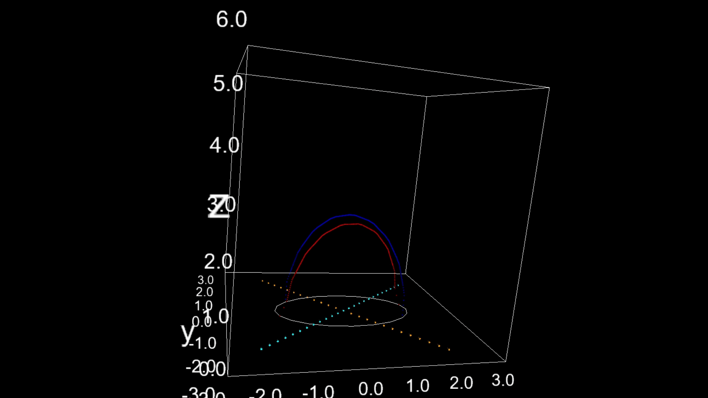

Animaciones de secciones de la función de Vaughan para el círculo de Varsovia.
Sea \(X\subseteq \mathbb{R}^2\), la función de Vaughan \(V: F_2(X) \to \mathbb{R}^3\) se define como:
\(V(\{x,y\}):= ( \frac{x+y}{2}, ||x-y||) \)
Observamos que si \(V\) no es una función inyectiva, es porque existen \(\{x_1, y_1\}\) y \(\{x_2, y_2\}\) subconjuntos distintos de \(X\) tales que \( \frac{x_1+y_1}{2} = \frac{x_2+y_2}{2} \) y que \(||x_1 - y_1||= ||x_2-y_2||\). Así, el segmento de recta \(\overline{x_1y_1}\) mide lo mismo que el segmento \(\overline{x_2y_2}\) y además, \(\overline{x_1y_1} \cap \overline{x_2y_2} \) es el punto medio de ambos segmentos. Por tanto, \(\overline{x_1y_1}\) y \(\overline{x_2y_2}\) son las diagonales del rectángulo formado por \((x_1,x_2,y_1,y_2)\).
De esta manera, si \(V\) no es inyectiva, entonces \(X\) inscribe un rectángulo.
Observemos que sucede si \(X\) tiene como elementos los cuatro vértices de algún rectángulo. Asumamos que \((z_1, z_2,z_3, z_4)\in X^4 \) representa los cuatro vértices de un rectángulo. Si las diagonales son los segmentos \(\overline{z_1z_2}\) y \(\overline{z_3z_4}\), entonces \(V(\{z_1,z_2\}) = V(\{z_3, z_4\}\) en donde claramente \(\{z_1,z_2\} \neq \{z_3, z_4\}\). Lo que nos permite concluir que \(V\) no es una función inyectiva.
En conclusión, \(X \subseteq \mathbb{R}^2\) inscribe un rectángulo si y sólo si la función de Vaughan no es inyectiva.
Por otro lado, si lo que buscamos es inscribir un cuadrado, no es suficiente pedir que la función de Vaughan no sea inyectiva, se debe pedir la perpedendicularidad entre las diagonales como condición adicional.
Sea \(X\subseteq \mathbb{R}^2\) y sea \(L_\theta\) la recta que forma un ángulo \(\theta \in [0,\pi)\) con el eje horizontal. Para cada \(x \in X\) denotemos \(L^x_\theta\) como la recta paralela a \(L_\theta\) que pasa por \(x\). Definamos a \(V^x_\theta\) como la restriccón de \(V\) al conjunto \(L^x_\theta\cap X \) y nombremos \(V_\theta:= \bigcup_{x \in X} V^x_\theta\).
Notamos que si \(Im[V_\alpha] \cap Im[V_\beta] \neq \emptyset\) con \(\beta> \alpha\), entonces \(X\) inscribe un rectángulo en donde uno ángulos de las diagonales es \(\beta- \alpha\).
Deducimos que si existe \(\theta \in [0, \frac{\pi}{2})\) tal que
\( Im[V_{\theta}] \cap Im[V_{\theta + \frac{\pi}{2}}] \neq \emptyset,\) entonces \(X\) inscribe un cuadrado.
A continuación mostraremos una animación en donde podemos aplicar lo anterior a un caso particular, en donde el conjunto \(X\) es un conjunto homeomorfo al círculo de Varsovia, aquí lo representamos encajado en \(\mathbb{R}^3\), contenido en el plano \(XY\) y de color blanco.
En la animación, para un tiempo fijo, (es decir, en cada instante) se representa de rojo al conjunto \(Im[V_{\theta}]\) y de azul al conjunto \(Im[V_{\theta + \frac{\pi}{2}}] \). La animación muestra como \(Im[V_{\theta}]\) y \(Im[V_{\theta + \frac{\pi}{2}}] \) cambian de manera continua cuando el parámetro \(\theta \) se deja correr en el intervalo \([0, \frac{\pi}{2})\).

A continucación presentaremos algunos dos animaciones en donde el conjunto al que le estamos aplicando el p´rocedimiento son curvas de Jordan.

El siguiente ejemplo es de una elipse, como sólo inscribe un único rectángulo, el conjunto rojo solo cruza al azul en algún punto y en único instante.
